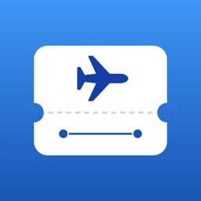

My Flight
サポート
予約のスクショ・メール・搭乗券から、自分と家族の便をまとめるアプリ
お問い合わせ
不具合のご報告やご要望は、次のメールアドレスまでお送りください。
読み取れなかった予約は、名前や予約番号などを隠したスクショや文を添えていただけると、調査がスムーズです。
便の入れ方
- スクショ：航空会社のアプリやサイトの予約の詳細を撮って、共有シートから「My Flight」に送るか、右上の＋の「スクショから読み取る」で選びます。
- Wallet の搭乗券：Wallet で搭乗券を開き、共有から「My Flight」に送ります。
- 予約のメール：メールの本文を選んで共有するか、コピーして＋の「コピーした文から読み取る」に貼り付けます。
- e チケット控えの PDF：ファイルアプリなどで PDF を開いて共有するか、＋の「PDF から読み取る」で選びます。
- 手で入れる：＋の「手で入れる」から、便名と日付などを入れます。
読み取った結果は、追加する前に確かめて直せます。文字の読み取りは端末の中で行います。
予約のメールを自動で取り込む
iPhone の「ショートカット」アプリのオートメーションを使うと、航空会社から予約のメールが届いたときに自動で便を追加できます。
- My Flight の左上の「…」→「メールの取り込み」で、自分の名前（ローマ字・カナ・漢字）と家族の名前を入れます。
- 「ショートカット」アプリの「オートメーション」で、「メール」を選び、「送信者」に航空会社の予約のメールのアドレスを入れます。
- アクションに「メールから便を取り込む」（My Flight）を足し、本文に変数「メール」の「コンテンツ」を渡します。
自分か登録した家族の名前があるメールだけ便を追加します。取り消しのメールなら、その便を「取り消した便」に移します。
よくある質問
到着の時刻などが空のままです。
読み取った文に書かれていない項目は空になります。便を開いて「…」の「編集」から入れられます。FlightAware の AeroAPI のキーをお持ちの方は、「…」→「運航情報」にキーを入れると、空いた項目を便名と日付で調べて埋めます（任意）。
家族の便を見られるようにしたい。
「…」→「家族と共有」から、iCloud の共有で家族を招待します。招待された人は見るだけで、直したり消したりはできません。
航空会社のサイトで予約を開くボタンは何をしますか。
便の画面から、航空会社のサイトの予約の確認のページをアプリの中で開きます。「自分と家族の情報」に予約の名前を入れておくと、名前と予約番号を入れた状態で開きます。サイトでの操作は、航空会社のサイトの利用条件に従います。
パスポートの番号はどこに保存されますか。
この iPhone のキーチェーンにだけ保存し、iCloud には送りません。見るときは Face ID などで確かめます。
航空会社のアプリですか。
いいえ。My Flight は個人が開発したアプリで、航空会社とは関係ありません。